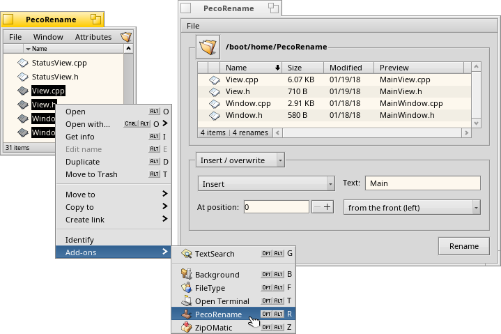
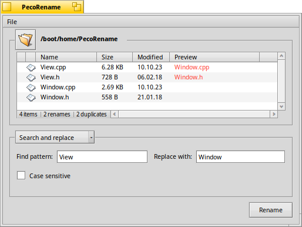
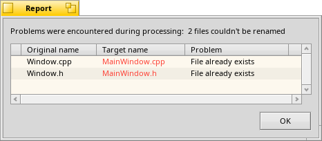
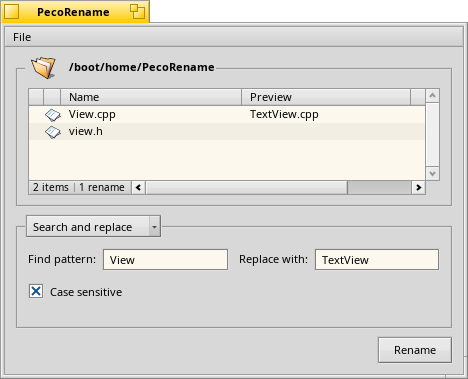

PecoRename
for Haiku
Using PecoRename ‒ Conflicting Renames ‒ Renamimg Modes
Tips & Tricks ‒ Download ‒ Bugreports & Feedback ‒ Thanks ‒ History
PecoRename is a utility to rename a batch of files according to a customized pattern. It renames files in many different ways: Add a file extension, number files in order, search and replace, and more…
Renaming can be initiated in two ways: Either the accompanying Tracker add-on is invoked on the selection of files that are to be renamed. Or PecoRename is launched and the files drag & dropped onto it or added from a file dialog by clicking on the folder icon.
PecoRename currently only works on files that are in the same folder.
|  |
| Four selected files are opened in PecoRename via the Tracker add-on. There, "Main" is inserted at the start of each file name. |
Then the mode of renaming is chosen from the pop-up menu below the list of files. More on the available renaming modes below.
The column of the file list will display the new file names while you create and tweak the renaming pattern with the various widgets of the chosen rename mode. If the preview of a file is empty, it means it doesn't fit the pattern and therefore isn't renamed.
|  |
| Replacing "View" with "Window" would create duplicates of the already existing "Window.cpp" and "Window.h". |
Conflicts arise if the renaming pattern would result in new file names that would clash with each other. In that case, the proposed new file name in the preview column is displayed in red and you see a count of in the status box at the bottom left of the file list.
These conflicting renames won't be performed, of course.
There's another possibility of conflict:
There may already exist files with the same names as the targeted new file names that were not selected to be processed by PecoRename.
Those won't be shown as red in the preview, because PecoRename will encounter them only during processing after pressing . Instead, a window will pop up, after all possible renamings are finished:
|  |
| "MainWindow.cpp" and "MainWindow.h" were already present in the folder: 2 files couldn't be renamed. |
These conflicting renames haven't been performed, of course.
The renaming modes are all pretty much self-explanatory. But see further down for some background on the mode.
Basically, you construct your pattern like you would read a sentence, choosing options and entering text for the variables that define the new file names. The preview always shows if you're still on the right track.
Click on the screenshot below, to click through examples for every renaming mode.
|  |
| Click on the image to see the next example. |
In this rename mode, PecoRename tries to find the correct file extension to append to each file. This will not always work as desired, however, so it's important to understand how it works:
Haiku marks every file with a so-called MIME type. If you get a file from a non-Haiku environment the new file's MIME type has to be identified. For this, Haiku uses different recognition mechanisms and ‒ as a last resort ‒ the file extension.
PecoRename goes the reverse way: For the given MIME type of a file, it fetches the corresponding extension. Those are set in Haiku's FileTypes preferences.
For PecoRename to do a good job at this, two conditions have to be met:
The file must have its MIME type set
If you are not sure if Haiku has already recognized a file, you can do this in Tracker: Right-click the file and choose . This only works on BFS formatted devices.
There must be an extension set for the file's MIME type
You can set and adjust the file extensions in Haiku's FileTypes preferences.
PecoRename always uses the first extension found. Because of this, you may get a non-desired extension like ".jpeg" instead of ".jpg", or ".mp2" instead of ".mp3" until you change the order.
You can remove a file from the list, by selecting it and pressing DEL. Or by right-clicking and choosing from the context menu.
The context menu let's you also the file with its preferred application, or with show its parent folder.
If you're dealing with a crowded folder when you select the files to rename, it helps to "Enable type-ahead filtering" in the Tracker preferences, if you haven't already. That can often filter out much of the chaff.
Another often overlooked Tracker feature is the item under
It let's you choose different modes of selection, like starts/ends/contains, wildcard expressions and even regular expressions. A mighty tool if you know how to wield it!
PecoRename is directly available through HaikuDepot from the HaikuPorts repository. You can also build it yourself using Haikuporter. The source is hosted at GitHub.
Please use PecoRename's issue tracker at GitHub if you experience unusual difficulties.
Also create enhancement tickets there if you'd like to provide more localizations.
PecoRename was originally coded for the BeOS by Werner Freytag ("Pecora") and was released under a MIT license in 2009.
Thanks to everyone contributing code, translations and feedback.
1.1 - 30-12-2016:
1.0 - 28-11-2016:
0.9 - 30-06-2015: